조경기사 (2018-09-15 기출문제)
1과목: 조경사
1. 창덕궁 옥류천 주변에 있는 정자가 아닌 것은?
- 청의정
- 농산정
- 농수정
- 취한정
(정답률: 68%)

2. 다음 중 일본의 시대별 정원양식이 맞지 않는 것은?
- 침전조 정원 – 평안시대
- 회유임천식 정원 – 겸창시대
- 고산수식 정원 – 실정시대
- 다정 – 나양시대
(정답률: 76%)
3. 고려시대 정원에 관한 내용이 기술된 문집이 아닌 것은?
- 동국이상국집
- 목은집
- 운곡시사
- 운림잡저
(정답률: 51%)
4. 명쾌한 균제미로부터 벗어나 번잡하고 지나친 세부기교에 치우치고 복잡한 곡선, 도금한 쇠붙이 장식, 다채로운 색 대리석 등을 풍부히 사용한 정원 양식은?
- 프랑스의 르네상스 평면기하학식
- 이탈리아 르네상스 노단건축식
- 르네상스 후기 바로크식
- 중세 고딕식
(정답률: 85%)
5. 중국에서 조경에 관계되는 한자의 의미 설명이 잘못된 것은?
- 원(園) : 과수류를 심었던 곳으로 울타리가 있는 공간
- 포(圃) : 채소를 심거나 기르는 곳
- 원(苑) : 짐승을 기르거나 자생하던, 울타리가 있는 공간
- 정(庭) : 건물이나 울타리에 둘러싸인 평탄한 뜰
(정답률: 82%)
6. 다음 중 중국 정원의 특성으로 가장 거리가 먼 것은?
- 태호석 등 세부시설에 조석이 많이 사용되었다.
- 자연경관이 수려한 곳에 곡절(曲折)기법을 사용하여 심산유곡을 형성하였다.
- 정원의 포지 포장 재료는 주로 목재를 사용하였다.
- 정원에 차경을 위하여 누창을 조성하였다.
(정답률: 82%)
7. 경복궁 교태전 후원을 지칭하는 다른 명칭은?
- 귀거래사(歸去來辭)
- 아미산(蛾嵋山)
- 삼신산(三神山)
- 곡수연(曲水宴)
(정답률: 83%)
8. 고대 신들을 위하여 축조한 건축물이나 조형물은 경관적으로 큰 역할을 하였다. 다음 중 신(神)을 위해 조성한 시설에 해당하지 않는 것은?
- Hanging Garden
- Obelisk
- Ziggurat
- Funerary Temple of Hat-shepsut
(정답률: 76%)
9. 연꽃을 군자에 비유한 애련설의 저자는?
- 이태백
- 왕휘지
- 주렴계
- 주희
(정답률: 78%)
10. 일본의 도산(모모야마)시대의 다정(茶定)을 구성하는 요소로 가장 부적합한 것은?
- 석등(石燈)
- 디딤돌
- 수통(水桶)
- 방지(方池)
(정답률: 77%)
11. 중국 명나라 원림에 관한 설명 중 틀린 것은?
- 원명원은 서쪽에 있는 이화원과 더불어 황가원림의 대표로 꼽힘
- 북경과 남경 및 소주와 양주 일대를 중심으로 발달됨
- 계성의 <원야>, 이어의 <한정우기> 등 원림관련 서적들이 출간됨
- 문화와 예술 활동의 장이자 예술작품의 배경이 됨
(정답률: 54%)
12. 다음 중 근대 조경의 흐름에 있어 적절하지 않은 설명은?
- 미국에서 전원도시(田園都市) 운동은 20C 초에 시작되었다.
- 래드번(Radburn)은 쿨데삭(cul-de-sac)의 원리를 정원이 아닌 단지계획에 적용한 것이다.
- 뉴욕(New York)의 센트럴파크(Centeral Park)는 죠셉 팩스톤(Joseph Paxton)과 옴스테드(Olmsted)의 공동 작품이다.
- 레치워스(Letchworth) 개발과 웰윈(Welwyn)조성은 영국의 대표적 전원도시이다.
(정답률: 80%)
13. 일본의 고산수정원은 어떤 목적에 의하여 조성되었는가?
- 불교 선종(禪宗)의 영향으로 방이나 마루에서 정숙하게 감상하도록 조성
- 도교사상의 영향으로 위락이나 산책을 위한 실용적인 목적으로 조성
- 불교 정토종(정토정)에서 화엄장엄 세계를 구현하는 목적으로 조성
- 신선사상의 목적으로 정숙하게 관조하는 목적으로 조성
(정답률: 66%)
14. 고대 그리스 일반시민의 주택에 대한 설명이 아닌 것은?
- 가족 공용실을 통해 각 실로 통하는 내향식 주택
- 단순하고 기능적이며, 거리의 소음으로부터 격리
- 중정은 포장을 하지 않고 방향성 식물을 식재
- 대리석 분수의 도입
(정답률: 56%)
15. 다음 설명에 해당하는 이탈리아의 정원은?
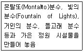
- Villa Lante(란테장)
- Villa d Este(에스테장)
- Villa Gamberaia(감베라이아장)
- Villa Aldobrandini(알도브란디니장)
(정답률: 71%)
16. 동양 3국에서 공통적으로 행해지던 곡수연과 관련이 없는 대상지는?
- 한국 경주의 포석정
- 일본 평성궁의 동원
- 중국 송복궁의 범상정
- 한국 궁남지의 포룡정
(정답률: 64%)
17. 전통담장 조영에 있어 벽돌, 기와 등으로 구멍이 뚫어지게 쌓은 담은?
- 분장(粉牆)
- 곡장(曲墻)
- 화문장(花紋牆)
- 영롱장(玲瓏牆)
(정답률: 67%)
18. 미국 역사상 최초의 수도권 공원계통을 수립한 사람은?
- 찰스 엘리오트(Charles Eliot)
- 프레드릭 로 옴스테드(Frederic Law Olmsted)
- 칼버트 보우(Calvert Vaux)
- 다니엘 번함(Danial Burnham)
(정답률: 72%)
19. 원야(園冶)에 대한 설명으로 옳지 않은 것은?
- 흥조론과 원설로 나눠진다.
- 원야의 저자는 문진향(文震享)이다.
- 정원구조물의 그림 설명이 되어 있다.
- 작자가 중국 강남에서의 작정경험을 기초로 했다.
(정답률: 80%)
20. 알함브라 궁전의 파티오에 대한 설명 중 옳지 않은 것은?
- 사자의 중정은 중앙에 분수를 두고 + 자형으로 수로가 흐르게 한 것으로 사적(私的) 공간기능이 강하다.
- 외국 사신을 맞는 공적(公的)장소에 긴 연못 양편에서 분수가 솟아오르게 한 알베르카 중정이 있다.
- 사이프레스 중정 혹은 도금양의 중정이란 명칭은 그 중정에 식재된 주된 식물의 명칭에서 유래하였다.
- 파티오에 사용된 물은 거울과 같은 반영미(反映美)를 꾀하거나 혹은 청각적인 효과를 도모하되 소량의 물로서 최대의 효과를 노렸다.
(정답률: 65%)
2과목: 조경계획
21. 교통과 동선계획은 교통량을 파악하고 적절한 교통량과 방향을 설정하는 계획이다. 주거지, 공원, 어린이놀이터 등에 적합한 도로형태에 가장 적합한 것은?
- 위계형
- 격자형
- 미로형
- 환상형
(정답률: 60%)
22. Avery(1977)의 자료 중 수지형(樹枝型)의 하천 패턴이 형성될 가능성이 가장 높고, 점토의 함량에 따라 변화가 심한 암석 지질은?
- 화강암
- 석회암
- 화산주변
- 사암(砂岩)
(정답률: 52%)
23. 다음 중 야생동물(wild life)의 서식처(분포)와 가장 밀접한 관련이 있는 인자는?
- 지형의 변화
- 식생분포
- 토양분포
- 인공구조물 분포
(정답률: 76%)
24. 「도시공원 및 녹지 등에 관한 법률」 시행규칙 중 도시공원별 유치거리(A) 및 규모(B)의 기준이 맞는 것은?
- 소공원 : (A) 150m 이하, (B) 5백m2 이상
- 어린이공원 : (A) 200m 이하, (B) 1천m2 이상
- 도보권근린공원 : (A) 1천 m 이하, (B) 3만 m2 이상
- 도시지역권근린공원 : (A) 2천m 이하, (B) 100만m2 이상
(정답률: 57%)
25. 동선계획에서 고려되어야 할 내용과 거리가 먼 것은?
- 부지 내 전체적인 동선은 가능한 막힘이 없도록 계획한다.
- 주변 토지이용에서 이루어지는 행위의 특성 및 거리를 고려하여 적절하게 통행량을 배분한다.
- 기본적인 동선 체계로 균일한 분포를 갖는 격자형과 체계적 질서를 가지는 위계형으로 구분할 수 있다.
- 도심지와 같이 고밀도의 토지이용이 이루어지는 곳은 위계형 동선이 효율적이다.
(정답률: 75%)
26. 공장조경 식재계획 수립의 방법으로 가장 거리가 먼 것은?
- 중부지방의 석유화학지대에는 화백, 은행나무, 양버즘나무를 식재한다.
- 성장 속도가 빠르고 대량공급이 가능한 수종을 선택한다.
- 공장과의 조화를 위해 수종선정은 경관성에 중심을 둔다.
- 자연스럽게 천연갱신이 되는 것을 선정한다.
(정답률: 72%)
27. 조경계획 과정에서 시설규모 결정은 매우 중요하며 수요예측에 따라서 결정된다. 방법 유형에 대한 설명으로 옳은 것은?
- 단순회귀분석 – 정성적 예측
- 여행발생분석 – 정성적 예측
- 델파이분석 – 정량적 예측
- 중력모형분석 – 정량적 예측
(정답률: 46%)
28. 「자연공원법 시행령」 상 공원기본계획의 내용에 포함되지 않는 사항은?
- 자연공원의 축(軸)과 망(網)에 관한 사항
- 자연공원의 자원보전·이용 등 관리에 관한 사항
- 자연공원의 관리목표 설정에 관한 사항
- 환경부장관이 자연공원의 관리를 위하여 필요하다고 인정하는 사항
(정답률: 61%)
29. 자연과학적 근거에서 인간의 환경적응의 문제를 파악하여 새로운 환경의 창조에 기여하고자하는 조경계획의 접근 방법은?
- 생태학적 접근
- 형식미학적 접근
- 기호학적 접근
- 현상학적 접근
(정답률: 63%)
30. GIS의 자료처리 및 구축을 위한 전반적인 작업과정으로 옳은 것은?
- 자료입력→자료수집→자료조작 및 분석→자료처리→출력
- 자료수집→자료입력→자료처리→자료조작 및 분석→출력
- 자료수집→자료입력→출력→자료처리→자료조작 및 분석
- 자료수집→자료조작 및 분석→자료처리→자료입력→출력
(정답률: 64%)
31. 다음 자연공원법 상의 해안지역의 범위에 맞는 것은?
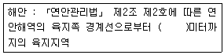
- 500
- 1000
- 3000
- 5000
(정답률: 68%)
32. 주어진 시각적 선호모델과 독립변수들의 값을 사용한 특정 지역의 시각적 선호도 값은?
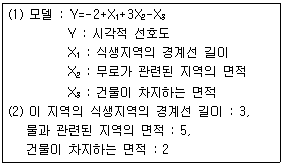
- 4
- 6
- 10
- 14
(정답률: 69%)
33. 이용 후 평가가 도입된 이후 설계 방법론에 대한 설명으로 옳은 것은?
- 생태계의 원리를 이해함을 말한다.
- 자연 및 인문환경의 철저한 분석을 의미한다.
- 기본계획 보고서 제작을 통해 바람직한 미래사의 청사진적 제시를 말한다.
- 계획수립, 집행, 결과를 평가를 토대로 한 환류(Feedback)를 포함한 전과정을 말한다.
(정답률: 73%)
34. 다음 중 레크레이션 계획의 접근 방법 분류에 해당하지 않는 것은?
- 자원형
- 심리형
- 행태형
- 혼합형
(정답률: 52%)
35. 인간 행동의 움직임을 부호화한 표시법(motation symbols)을 창안하여 설계에 응용한 사람은?
- lan L.McHarg
- Philip Thiel
- Laurence Halprin
- Christopher J.Jones
(정답률: 70%)
36. 주차장의 주차구획 기준은 평행주차형식과 그 외의 경우로 구분된다. 평행주차형식 외의 경우 주차장의 주차구획 최소 기준이 맞는 것은? (단, 규격 표현은 너비×길이로 나타낸다.)
- 일반형 : 2.3m × 5.0m
- 장애인전용 : 3.3m × 5.0m
- 확장형 : 2.8m × 5.0m
- 경형 : 2.1m × 3.5m
(정답률: 72%)
37. 시몬스(J.O.Simonds)가 제시하고 있는 공간구성의 4가지 요소 중 제3차 요소에 해당하는 것은?
- 계절
- 담장
- 도로
- 수목
(정답률: 57%)
38. 다음 중 생태·경관 보전지역에 포함되지 않는 것은?
- 생태·경관관리보전구역
- 생태·경관핵심보전구역
- 생태·경관완충보전구역
- 생태·경관전이보전구역
(정답률: 38%)
39. 다음 중 아파트 단지 내 울타리 조성 방법 중 자연스러운 경관, 둔덕과 조화된 추가된 높이, 한 번 설치 후 유지관리비용 절감의 이점이 있는 방법은?
- 벽돌쌓기
- 수목으로 식재하기
- 목재울타리 만들기
- 콘크리트 울타리 만들기
(정답률: 70%)
40. 생태연못 및 습지의 계획지침으로 적절하지 않은 것은?
- 되도록 장축 방향은 동서방향으로 배치한다.
- 호안 모양은 내부면적대비 주연길이가 큰 형태로 조성한다.
- 소형의 다수보다는 대형의 소수가 바람직하다.
- 호안 사면은 1:3~1:5 이하의 완경사를 이루도록 한다.
(정답률: 55%)
3과목: 조경설계
41. 다음 중 유희시설 설계 시 고려할 사항이 아닌 것은?
- 평탄지, 경사지 등의 지형특성에 맞는 이용을 고려한다.
- 편리성, 예술성보다 안정성을 더욱 고려해야 한다.
- 놀이기구는 가능한 한 다양하게 많은 기구를 배치하도록 한다.
- 이용계층(유아, 소년 등)에 맞는 놀이시설을 배치하도록 한다.
(정답률: 76%)
42. 조경설계기준상 「경사로」설계 내용으로 옳은 것은?
- 휠체어 사용자가 통행할 수 있는 경사로의 유효폭은 100cm가 적당하다.
- 바닥표면은 휠체어가 잘 미끄러질 재료를 선택하고, 울퉁불퉁하게 마감한다.
- 연속경사로의 길이 50m 마다 1.2m×3m이상의 수평면으로 된 참을 설치하여야 한다.
- 지형조건이 합당한 경우 장애인 등의 통행이 가능한 경사로의 종단기울기는 1/18이하로 한다.
(정답률: 70%)
43. 조경공간의 보도에 포장면 기울기 설명 중 ( )안에 알맞은 것은?
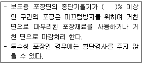
- 2
- 3
- 4
- 5
(정답률: 41%)
44. 다음 색에 관한 설명 중 옳은 것은?
- 파랑 계통은 한색이고, 진출색·평창색이다.
- 파랑 계통은 난색이고, 후퇴색·팽창색이다.
- 빨강 계통은 난색이고, 진출색·팽창색이다.
- 빨강 계통은 한색이고, 후퇴색·팽창색이다.
(정답률: 76%)
45. 황금분할(golden section)에 관한 설명으로 옳지 않은 것은?
- 피보나치(Fibonacci)로 급수와는 유사하다.
- 황금비의 향수는 1+√5 또는 √5구형으로 작도할 수 있다.
- 황금분할 비율은 응용으로 달팽이 등의 성장곡선을 작도 할 수 있다.
- 하나의 선분을 대소 두 개의 선으로 나눌 대 큰 것과 작은 것의 길이의 비가 전체화 큰 것의 길이 비와 동일하다.
(정답률: 64%)
46. 다음 중 시각적 선호를 결정짓는 변수에 해당하지 않는 것은?
- 물리적 변수
- 사회적 변수
- 상징적 변수
- 추상적 변수
(정답률: 52%)
47. 다음 설명에 적합한 혼색 방법은?
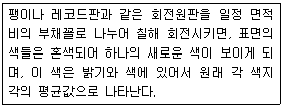
- 색광혼색
- 감법혼색
- 중간혼색
- 병치가법혼색
(정답률: 49%)
48. 인간 척도(human scale)에 관한 설명으로 틀린 것은?
- 인간을 기준으로 대상을 측정하는 경우를 말한다.
- 주위에 인간 척도를 가진 대상이 없는 경관은 불안감을 준다.
- 관찰자의 속도가 빠르면 세밀한 경과요소는 보이지 않는다.
- 인간보다 작은 척도가 많은 공간은 웅장해 보인다.
(정답률: 73%)
49. 다음 기하학적 형태 주제 중 그 상징성과 의미가 부드러움, 혼합, 연결, 조화를 나타내는 것은?
- 45° / 90° 각의 형태
- 원 위의 원형
- 호와 접선형
- 원의 분할형
(정답률: 65%)
50. 다음 환경미학과 관련된 설명 중 틀린 것은?
- 주로 예술작품을 연구한다고 볼 수 있다.
- 미학과 환경미학의 관계는 예술가와 환경설계가의 관계로써 설명될 수 있다.
- 종합적으로 미적인 지각과 인지 및 반응에 관계되는 이론 및 응용을 종합적으로 연구한다.
- 환경미학에서도 보다 종합적인 미적경험과 반응에 관심을 두며, 현실적인 환경문제 해결을 지향한다.
(정답률: 72%)
51. 경관분석 시 경관 통제점의 선정 기준에 적합하지 않는 것은?
- 주로 도로 및 산책로
- 이용밀도가 높은 장소
- 주변지형 중 가장 표고가 높은 곳
- 특별한 가치가 있는 경관을 조망하는 장소
(정답률: 50%)
52. 다음 중 조경설계기준상의 「조경석 놓기」에 대한 설명이 틀린 것은?
- 돌을 묻는 깊이는 조경석 높이의 1/4이 지표선 아래로 묻히도록 한다.
- 단독으로 배치할 경우에는 돌이 지닌 특징을 잘 나타낼 수 있도록 관상위치를 고려하여 배치한다.
- 3석을 조합하는 경우에는 삼재미(천지인)의 원리를 적용하여 중앙에 천(중심적), 좌우에 각각 지, 인을 배치한다.
- 5석 이상을 배치하는 경우에는 삼재미의 원리 외에 음양 또는 오행의 원리를 적용하여 각각의 돌에 의미를 부여한다.
(정답률: 68%)
53. 할프린(halprin, 1965)에 의해서 수행된 연속적 경관구성에 관한 연구의 내용이라고 볼 수 없는 것은?
- 건물, 수목, 지형 등의 환경적 요소를 부호화하여 기록
- 공간형태보다는 시계에 보이는 사물의 상대적 위치를 기록
- 장소 중심적인 기록 방법이며, 시각적 요소가 첨가
- 폐쇄성이 비교적 낮은 교외지역이나 캠퍼스 등에 적용이 용이
(정답률: 42%)
54. 형광등 아래서 물건을 고를 때 외부로 나가면 어떤 색으로 보일까 망설이게 된다. 이처럼 조명광에 의하여 물체의 색을 결정하는 광원의 성질은?
- 색온도
- 발광성
- 연색성
- 색순옹
(정답률: 60%)
55. 독립식재의 평면적인 구성에 대한 설명 중 틀린 것은?
- 수목의 전체적인 형태가 아름답고 수피, 잎, 꽃의 색깔이나 질감이 우수하고 무게감이 있는 수목을 독립적으로 식재하는 방법을 독립식재라 한다.
- 지그재그식으로 어긋나게 식재하는 교호식재와 반원형식재, 원형식재는 열식의 응용형태로 식재 폭을 넓히기 위해 변화를 주기 위함이다.
- 군식은 식재기능에 따라 규칙적으로 수목을 배열하는 정형식 군식과 자연스런 모습의 군락을 형성하게 하는 자연형 군식을 나누어 생각할 수 있다.
- 자연형 군식의 기법은 양적인 식재공간을 조성하면서 엄숙하고 질서정연한 분위기를 조성할 때에 사용하는 수법으로 식재수종, 간격에 따라 군식 된 공간의 느낌이 달라질 수 있다.
(정답률: 63%)
56. 다음 중 자연의 이미지를 형태화하기 위한 방법에 해당하는 것은?
- 직해
- 위트
- 유사성
- 표절
(정답률: 54%)
57. 다음 투상도의 평면도로 가장 적합한 것은? (단, 제 3각법으로 도시하였다.)
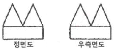
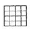
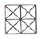
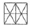
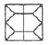
(정답률: 74%)
58. 조경설계기준상의 쓰레기통 설치기준에 대한 설명으로 옳지 않은 것은?
- 내구성 있는 재질을 사용하거나 내구성 있는 표면마감 방법으로 설계한다.
- 각 단위공간 마다 배치할 필요는 없고, 단위 공간 몇 개를 조합하여 그 중간에 1개소 설치한다.
- 각 단위공간의 의자 등 휴게시설에 근접시키되, 보행에 방해가 되지 않도록 하고 수거하기 쉽게 배치한다.
- 설계 대상공간의 휴게공간·운동공간·놀이공간·보행공간과 산책로 등 보행동선의 결절점, 관리사무소·상점 등의 건물과 같이 이용량이 많은 지점의 적정위치에 배치한다.
(정답률: 74%)
59. 인공지반에 자연토양 사용 시 식재된 식물에 필요한 최소 생육 토심이 틀린 것은? (단, 배수경사는 1.5~2.0%로 한다.)
- 교목 : 70cm이상
- 소관목 : 30cm이상
- 대관목 : 45cm이상
- 잔디 및 초화류 : 10cm이상
(정답률: 54%)
60. 다음 중 경관구성 상 랜드마크(landmark)적 성격에 해당하지 않는 것은?
- 에펠탑
- 어린이대공원
- 남대문
- 피라미드
(정답률: 74%)
4과목: 조경식재
61. 다음 [보기]의 특징을 갖는 수종은?
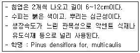
- 곰솔
- 금송
- 반송
- 잣나무
(정답률: 59%)
62. 다음 벤트그라스(Bentgrasses)에 관한 설명이 틀린 것은?
- 불완전 포복형이지만 포목력이 강한 포복경을 지표면으로 강하게 뻗는다.
- 다른 잔디류에 비하여 답압에 매우 강하여, 많이 이용될지라도 그 피해가 적은 편이다.
- 호광성 잔디로 그늘에서는 자랄 수 없으며 특히 건조한 지역에서는 자주 관수를 해주어야 한다.
- 한치형 잔디로 여름철에는 잘 자라지 못하여 병해가 많이 발생하나 서늘할 때는 그 생육이 왕성한 편이다.
(정답률: 38%)
63. 거친 돌 조각물을 더욱 돋보이게 하기 위한 배경식재로 가장 적합한 것은?
- 큰 잎이 넓은 간격으로 소생하는 수종
- 작은 잎이 넓은 간격으로 소생하는 수종
- 작은 잎이 조밀하게 밀생하는 수종
- 잎이 크고 가시가 있는 수종
(정답률: 68%)
64. 환경영향평가 항목 중 식생 조사를 할 때 위성 데이터를 활용하면 얻을 수 있는 유리한 점이 아닌 것은?
- 광역성
- 동시성
- 사실성
- 주기성
(정답률: 51%)
65. 다음 중 여름(6~9월)에 꽃의 향기를 맡을 수 없는 식물은?
- 치자나무(Gardenia jasminoides)
- 함박꽃나무(Magnolia sieboldii)
- 인동덩굴(Lonicera japonica)
- 서향(Daphne odora)
(정답률: 45%)
66. 첨가제에 의한 토양 개량공법 중 물리성의 개량 방법이 아닌 것은?
- 펄라이트 첨가
- 이탄이끼 첨가
- 수피, 톱밥 첨가
- 석회 첨가
(정답률: 55%)
67. 다음 중 생리적 기작에서 광보상점(혹은 광포화점)이 가장 낮은 수종은?
- 버드나무
- 금송
- 무궁화
- 소나무
(정답률: 46%)
68. 벽면녹화 설계의 일반사항으로 적합하지 않은 것은?
- 벽면녹화 방법은 등반형, 하수형, 기반조성형 등으로 구분할 수 있다.
- 에너지 절약, 구조물 보호, 반사광 방지 등의 기능적 효과도 기대할 수 있다.
- 식물의 생육은 벽면의 방위(방향)에 따라 영향을 받는다.
- 기반조성형은 식재기반으로부터 식물을 늘어뜨려 피복하는 방법이다.
(정답률: 64%)
69. 다음 참나무속(屬) 중 잎 뒷면에 성모(星毛)가 밀생하고, 잎이 대형이며 시원하고, 야성적인 미가 있어 자연풍처럼 조성에 적당한 수종은?
- 굴참나무(Quercus variabilis)
- 상수리나무(Quercus acutissima)
- 졸참나무(Quercus serrata)
- 떡갈나무(Quercus dentata)
(정답률: 55%)
70. 카탈라제(catalase)에 대한 설명으로 옳은 것은?
- 탄수화물을 환원시키는 효소이다.
- 활동이 클수록 영양생장이 활발해진다.
- 세포 내 호흡작용을 억제하는 작용을 한다.
- 전자(electron)의 수용체 역할을 하는 특수 효소이다.
(정답률: 43%)
71. 흉고 직경이 10cm인 나무의 근원 직경이 흉고 직경보다 2cm 더 컸다면 이 나무의 근원부 둘레는 얼마인가?
- 20.0cm
- 24.0cm
- 31.4cm
- 37.7cm
(정답률: 55%)
72. 다음 중 꽃 색이 다른 수종으로 연결된 것은?
- 백목련(Magnolia denudata Desr)
때죽나무(Styrax japonicus Siebold & Zucc.) - 미선나무(Abeliophyllum distichum Nakai)
마가목(Sorbus commixta He이.) - 풍년화(Hamamelis japonica Siebold & Zucc.)
생강나무(Lindera obtusiloba Blum) - 모감주나무(Koelreuteria paniculata Laxmann)
채진목(Amelanchier asiatica E n이. ex Walp)
(정답률: 43%)
73. 목본식물에 기생하는 외생균근을 형성하는 수목이 아닌 것은?
- 일본잎갈나무(Larix kaempferi)
- 고로쇠나무(Acer pictum)
- 자작나무(Betula platyphylla)
- 너도밤나무(Fagus engleriana)
(정답률: 40%)
74. 은행나무(Ginkgo biloba L.)의 특징으로 틀린 것은?
- 은행나무과(科)이다.
- 낙엽침엽교목이다.
- 암수한그루이고 꽃은 5월경에 핀다.
- 회백색의 나무껍질은 세로로 깊이 갈라진다.
(정답률: 62%)
75. 수목의 이식 적기는 수종에 따라 약간의 차이가 있을 수 있다. 다음 중 이식 시기와 관련된 설명으로 부적합한 것은?
- 낙엽활엽수 중 이른 봄에 개화하는 종류는 전년도의 11~12월 중에 이식을 끝마쳐야 한다.
- 가을 이식의 경우 낙엽이 진 후 아직 토양이 얼기 전의 기간을 이용할 수 있다.
- 상록활엽수는 한국과 같이 겨울이 추울 경우 휴면을 고려할 때 봄 이식 보다는 가을 이식이 유리하다.
- 가을철 낙엽이 지기 시작하는 늦가을부터 봄철 새싹이 나오는 이른 봄까지를 휴면기라고 하며, 이때가 이식적기이다.
(정답률: 58%)
76. 옥상정원(屋上庭園)의 계획 시 우선적으로 고려해야 할 내용이 아닌 것은?
- 토양, 수목의 무게 등 하중의 계산
- 관수와 배수 그리고 방수관계
- 전체 건물의 건축계획, 구조계획, 기계설비 계획과의 상호 연관성
- 도시환경 및 기후조절 문제에의 기여성
(정답률: 61%)
77. 다음 중 자연풍경식 식재 수법으로 많이 이용되는 형식은?
- 정삼각형식
- 이등변삼각형식
- 일직선의 3본형형식
- 부등변삼각형식
(정답률: 69%)
78. 사고방지를 위한 식재 중 “명암순응식재”의 설명으로 부적합한 것은?
- 중앙분리대가 넓을 경우 교목의 식재도 가능하다.
- 터널 주위의 명암을 서서히 바꿀 목적으로 식재한 것이다.
- 터널입구로부터 200~300m 구간의 노견과 중앙분리대의 낙엽교목을 식재한다.
- 터널에서의 거리에 따라 밝기를 조절하기 위해 식재밀도의 변화를 주는 것이 바람직하다.
(정답률: 63%)
79. 식물의 줄기는 단독 또는 잎과 함께 그 모양이 달라지는 경우가 있는데, 다음 설명은 어떤 형태인가?
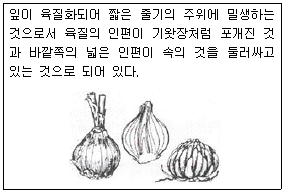
- 지하경(rhizome)
- 인경(bulb)
- 구경(corm)
- 괴경(tuber)
(정답률: 62%)
80. 식물명명의 기본원칙과 관련된 설명으로 옳지 않은 것은?
- 분류균의 학명은 선취권에 따른다.
- 학명은 라틴어화 하여 표기 한다.
- 분류군의 명명은 표본이 명명기본이 된다.
- 식물의 학명은 동물의 학명과 관계가 있다.
(정답률: 70%)
5과목: 조경시공구조학
81. 정지설계에서 가장 불필요한 도면은?
- 기본도
- 개념도
- 경사분석도
- 지질도와 토양도
(정답률: 60%)
82. 일반적으로 강은 탄소함유량이 증가함에 따라 비중, 열팽창 계수, 열전도율, 비열, 전기 저항 등에 영향을 미친다. 다음 설명 중 틀린 것은?
- 압축강도는 거의 같다.
- 굴곡성은 탄소량이 적을수록 작아진다.
- 탄소량의 증가에 따라 인장강도, 경도는 증가한다.
- 탄소량의 증가에 따라 신율, 수축율은 감소한다.
(정답률: 40%)
83. 토지이용도별 기초유출계수의 표준값 중 표면 형태가 「잔디, 수목이 많은 공원」에 해당하는 계수 값은?
- 0.10~0.30
- 0.⑤~0.25
- 0.20~0.40
- 0.40~0.60
(정답률: 57%)
84. 포졸란(pozzolan) 반응의 특징이 아닌 것은?
- 블리딩이 감소한다.
- 작업성이 좋아진다.
- 초기강도와 장기강도가 증가한다.
- 발열량이 적어 단면이 큰 대형 구조물에 적합하다.
(정답률: 53%)
85. 건설공사에서 사용되는 「선급금」에 대한 설명으로 옳은 것은?
- 공사가 완공되어 계약한 공사대금을 발주자가 지불하는 금액이다.
- 정해진 공사기간 내에 공사를 완성하지 못했을 때 도급자가 발주자에게 납부하는 금액이다.
- 공사가 진행되면서 시공이 완성된 부분에 대해 도급자에게 주기적으로 지급하는 대금이다.
- 공사계약이 체결되었을 때 시공 준비를 위해 계약금액의 일정률을 발주자로부터 지급 받는 금액이다.
(정답률: 72%)
86. 건설공사의 시방서 기재사항으로 가장 거리가 먼 것은?
- 건물인도의 시기
- 재료의 종류 및 품질
- 재료에 필요한 시험
- 시공방법의 정도 및 완성에 관한 사항
(정답률: 59%)
87. 모멘트(moment)에 대한 설명으로 옳지 않은 것은?
- 모멘트랑 힘의 어느 한 점에 대한 회전 능률이다.
- 모멘트 작용점으로부터 힘까지의 수선거리를 모멘트 팔이라 한다.
- 회전방향이 시계방향일 때의 모멘트 부호는 정(+)으로 한다.
- 크기와 방향이 같고 작용선이 평행한 한 쌍의 힘을 우력이라 한다.
(정답률: 59%)
88. 조경공사 현장에서 공정관리를 위해 사용되는 기성고 공정곡선에서 A, B, C, D의 공정 현황에 대한 설명으로 틀린 것은?
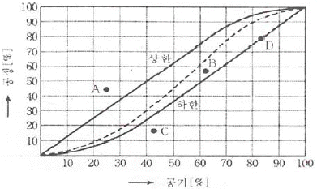
- A : 예정공정보다 실적공정이 훨씬 진척되어 있으나 공정관리의 문제점을 재검토할 필요가 있다.
- B : 예정공정보다 실적공정이 다소 낮으나 허용한계 하한이내이므로 정상적인 범위에 해당한다.
- C : 예정공정보다 실적공정이 훨씬 낮아 허용 한계 하한을 벗어나므로 공정관리의 위기 상황이다.
- D : 예정공정보다 실적공정이 낮으나 허용한계 하한에 있으므로 공정관리에 최적화되어 있다.
(정답률: 68%)
89. 표준길이보다 3mm 늘어난 50m 테이프로 정사각형의 어떤 지역을 측량하였더니, 면적이 250000m2이었다. 이때의 실제면적은 얼마인가?
- 250030m2
- 260040m2
- 270⑤0m2
- 280040m2
(정답률: 55%)
90. 그림과 같이 외팔보에 하중에 작용할 때 전단력선도로 옳은 것은?
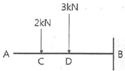
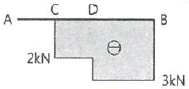
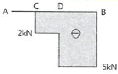
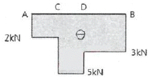
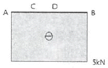
(정답률: 53%)
91. 다음 그림에서와 같은 평행력에 있어서 P1, P2, P3, P4의 합력의 위치는 0점에서의 몇 m거리에 있겠는가?
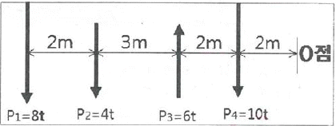
- 5.4m
- 5.7m
- 6.0m
- 6.4m
(정답률: 40%)
92. 수목 식재공사에서 지주목을 설치하지 않는 기계시공은 식재품의 몇 %를 감하는가?
- 10%
- 20%
- 25%
- 30%
(정답률: 57%)
93. 어느 지역 토양의 공극률(porosity) 측정을 위해 토양 60cm3을 채취하여 고형입자 부피와 수분 부피를 측정하였더니 각각 36cm3와 12cm3였다. 이 지역 토양의 공극률(%)은?
- 10%
- 20%
- 30%
- 40%
(정답률: 41%)
94. 면적을 계산하는 구적기(Planimeter)의 사용방법으로 틀린 것은?
- 구적계의 상수를 미리 계산하는 것이 좋다.
- 상하좌우의 이동이 비슷하게 평면을 잡는 것이 좋다.
- 이론적으로 많은 회수의 측정을 할수록 계산이 정확해 진다.
- 정방형보다는 세장한 곡선부의 측정에서 정밀도가 높아진다.
(정답률: 56%)
95. 등고선에 대한 설명으로 맞는 것은?
- 강우 시 배수방향은 등고선에 수직방향이다.
- 기존등고선은 실선, 계획등고선은 점선으로 표시한다.
- 완경사지에서는 등고선 사이의 수평거리가 일정하다.
- 요(, Concave)경사지에서는 높은 쪽으로 갈수록 등고선 사이의 수평거리가 더 넓다.
(정답률: 52%)
96. 한중콘크리트에 대한 설명으로 옳은 것은?
- 저열시멘트를 사용하는 것을 표준으로 한다.
- 재료를 가열할 경우, 물 또는 시멘트를 가열하는 것으로 한다.
- 물-시멘트비가 작아지기 때문에, AE강수제 사용을 가급적 피해야 한다.
- 타설할 때의 콘크리트 온도는 구조물의 단면치수, 기상조건 등을 고려하여 5~20℃의 범위에서 정한다.
(정답률: 44%)
97. 어느 토양 구조의 양단면적이 A1=100m2, A2=200m2이고, 중앙단면적은 120m2이다. 양단면간의 거리 L=10m일 때, 양단면적평균법(Q), 중앙단면적법(W), 각주공식(E)에 의한 토적(m3)의 조합으로 옳은 것은?
- Q : 1200, W : 1300, E : 1400
- Q : 1300, W : 1400, E : 1500
- Q : 1400, W : 1300, E : 1600
- Q : 1500, W : 1200, E : 1300
(정답률: 52%)
98. 미국농무부 기준의 거친 모래(조사) 굵기는?
- 0.⑤~0.002mm
- 0.1~0.⑤mm
- 1.0~0.5mm
- 2.0~1.0mm
(정답률: 40%)
99. 배수관망의 부설방법 중 적합하지 않은 것은?
- 배수관내의 마찰저항을 줄이기 위해 가급적 등고선과 직교하지 않게 부설한다.
- 배수지역이 광대하여 배수관망을 한 곳으로 집중시키기 곤란할 경우 방사식 관망부설법을 사용한다.
- 지선을 다수 배치하여 처리하는 것보다 간선을 많이 배치하는 것이 더 효율적이다.
- 지형에 순응하여 자연 유하선을 따라 관을 부설한다.
(정답률: 59%)
100. 벽돌 외벽 시공시 고려해야 할 사항으로 가장 거리가 먼 것은?
- 가로줄눈의 충전도
- 모르타르의 접착강도
- 세로줄눈의 충전도
- 벽체의 수직·수평도
(정답률: 52%)
6과목: 조경관리론
101. 질산태질소 화합물에 산성비료를 배합하면 이 때의 반응은?
- 질산으로 휘발된다.
- 조해성이 증가된다.
- 암모니아로 휘발된다.
- 암모니아로 환원된다.
(정답률: 46%)
102. 토양의 질산화작용(nitrification)에 대한 설명으로 옳지 않은 것은?
- 토양 중에서 주로 미생물이나 고등식물에 의하여 일어난다.
- 광질산화작용은 미생물에 의한 작용 없이 화학적 작용에 의한 것이다.
- 질산화작용은 수분함량이 과도할 때 왕성하며, 공기의 유통이 좋을 때 저해된다.
- 토양 중 또는 비료로서 토양에 사용되는 암모늄태질소가 산화되어 질산태질소로 변하는 것이다.
(정답률: 48%)
103. 다음 중 회양목명나방의 설명이 틀린 것은?
- 유충이 거미줄로 토하여 잎을 묶고 그 속에서 잎을 식해한다.
- 포식성 천적인 무당벌레류, 풀잠자리류, 거미류 등을 보호한다.
- 연 2회 발생하나 3회 발생하기도 하며, 유충으로 월동한다.
- 대개 10월 상순경부터 피해가 심하게 나타나며 가해부위에서 번데기가 된다.
(정답률: 34%)
104. 주요 조경시설의 대표적인 중요 관리항목과 보수방법으로 가장 부적합한 것은?
- 표지판 – 도장의 퇴색 – 재도장
- 음수전 – 배수구의 막힘 – 이물질 제거
- 휴지통 – 수거 횟수 및 수거차량의 선정 – 수거계획의 수립
- 벤치, 야외탁자 – 주변의 물고임 방지 – 포장 재료의 교체
(정답률: 68%)
1⑤. 농약의 사용법에 의한 약해로 가장 거리가 먼 것은?
- 근접살포에 의한 약해
- 동시 사용으로 인한 약해
- 불순물 혼합에 의한 약해
- 섞어 쓰기 때문에 일어나는 약해
(정답률: 40%)
106. 공사 현장에서의 부주의에 의한 사고방지대책 중 정신적 대책과 가장 거리가 먼 것은?
- 적성 배치
- 스트레스 해소 대책
- 주의력 집중 훈련
- 표준작업의 습관화
(정답률: 59%)
107. 수목관리를 할 때에 수형의 전체 모양을 일정한 양식에 따라 다듬는 작업은?
- 정자(整姿, trimming)
- 정지(整枝, training)
- 전제(煎除, trailing)
- 전정(煎定, pruning)
(정답률: 42%)
108. 다음 설명하는 파손의 형태는?
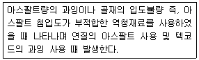
- 균열
- 국부적 침하
- 박리
- 표면연화
(정답률: 39%)
109. 주민참가에 의한 공원관리 활동 내용으로 적합하지 않은 것은?
- 제초, 청소작업
- 사고, 고장 등을 관리주체에 통보
- 레크레이션 행사의 개최
- 전정, 간벌작업
(정답률: 65%)
110. 다음 설명의 ( )안에 적합한 용어는?
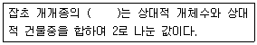
- 우점도
- 다양도
- 유사도
- 비유사성계수
(정답률: 56%)
111. 잔디 녹병(Rust)의 방제대책으로 가장 거리가 먼 것은?
- 토양 산성화를 방지할 것
- Rough지역에 잔디의 적정예초 높이를 지킬 것
- 배수를 개선하고 질소질 비료를 균형 시비하도록 할 것
- 예초된 잔디와 장비(mower)등을 통한 전염을 예방할 것
(정답률: 36%)
112. 옥외 레크레이션 관리체계에서 주요 기능의 부체계 관리요소가 될 수 없는 것은?
- 시설관리(facility management)
- 자원관리(resource management)
- 이용자관리(visitor management)
- 서비스관리(service management)
(정답률: 42%)
113. 화학적 반응 및 현상에 의한 토양질소의 변동 과정에 해당되지 않는 것은?
- 탈질작용(denitrification)
- 부동화작용(immovilization)
- 질산화작용(nitrification)
- 세탈작용(washing-out)
(정답률: 48%)
114. 수목의 병해에 대한 설명 중 옳지 않은 것은?
- 자낭균에 의한 빗자루병은 벚나무류는 걸리지 않는다.
- 그을음병은 진딧물이나 깍지벌레의 배설물에 곰팡이가 기생하여 생긴다.
- 포플러 잎 녹병은 5~6월에 여름포자가 발생하여 8월 말까지 계속 반복 전염된다.
- 잣나무털녹병은 병든 가지나 줄기 수피는 노란색 또는 갈색으로 변하면서 부푼다.
(정답률: 60%)
115. 다음 중 조경작업장에서 기계사용 관련 재해 발생 시 조치 순서 중 긴급처리의 내용으로 볼 수 없는 것은?
- 현장보존
- 잠재위험요인 적출
- 재해자의 응급조치
- 관련 기계의 정지
(정답률: 54%)
116. 미끄럼판에 사용되는 F.R.P 제품의 일반적 성질 중 물리적 성질이 아닌 것은?
- 내열성
- 압축강도
- 인장강도
- 내약품성
(정답률: 62%)
117. 다음 특징의 병해가 주로 발생하는 수목은?
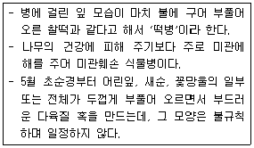
- 철쭉
- 개나리
- 사철나무
- 느티나무
(정답률: 56%)
118. 다음 중 유희시설과 관련된 설명으로 가장 부적한 것은?
- 이용자를 고려하여 정적인 놀이시설과 동적인 놀이시설은 함께 배치하여 관리한다.
- 유희시설이 면모서리, 구석모서리는 둥글게 처리하거나 모따기를 한다.
- 그네, 회전무대 등 충돌의 위험이 많은 시설은 보행동선과 놀이동선이 상충 되거나 가로 지르지 않도록 배치한다.
- 시설조립에 사용되는 긴결재는 규정된 도구로만 해체가 가능해야 한다.
(정답률: 65%)
119. 자주목 관리에 관한 설명 중 옳지 않은 것은?
- 결속 끈은 탄력성이 있는 것으로 하고, 일정한 주기로 고쳐 묶기를 해야 한다.
- 가로수 지주목의 횡목(橫木)은 차도와 평행하게 설치하는 것이 좋다.
- 지주목 자체에서도 통일미와 반복미를 가지므로 재료와 규격을 통일하는 것이 좋다.
- 인공지반에 식재하는 수고 1.2m 이상의 수목은 활착 및 지반의 안정을 위해 1년 후 지지시설을 철거하여 한다.
(정답률: 60%)
120. 조경운영 관리방식 중 직영방식과 비교한 도급방식의 단점에 해당하는 것은?
- 인사정체가 되기 쉽다.
- 전문가를 합리적으로 이용할 수 있다.
- 인건비가 필요 이상으로 들게 된다.
- 책임의 소재나 권한의 범위가 불명확하게 된다.
(정답률: 59%)